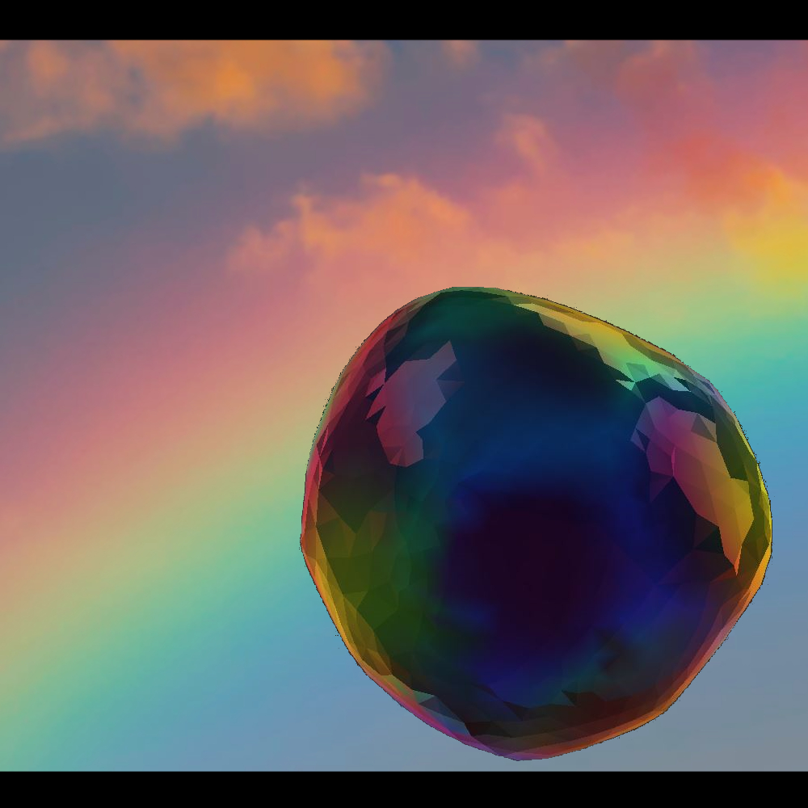

The Hope Diamond is originally from India. The 45.52 ct diamond is a beautiful deep blue gem with 16 smaller gems around it. The Diamond was donated to the Smithsonian in 1958 from Harry Winston. The Hope Diamond gets lots of visits because it is known for the rare deep blue color and the intresting history behind it.
Before the 1950s, Topaz was known almost only for its yellow or golden color. But since then Topaz is most remembered by its light to deep blue color. The most common colors of topaz are colorless, blue, and yellow. There are some more colors topaz comes in like pink and red, but they are pretty rare. Pink topaz, however, can be "produced by heating the golden brown topaz from Ouro Preto, Brazil," says the Smithsonian National Museum Of Natural Hisory. Topaz is locally from Minas Gerais, Brazil.
Dom Pedro Aquamarine is aslo locally from Minas Gerais, Brazil, it weighs 10,363 ct. Dom Pedro Aquamarie was a gift from Ms. Jane Mitchell and Jeffrey S. Bland in 2011. The Smithsonian National Museum Of Natural Hisory states, "The Dom Pedro Aquamarine was cut from an enormous aquamarine found in the Minas Gerais region of Brazil." Isn't that cool!
Gachala Emerald is localy from Cundinamarca, Colombia and weighs 858 ct. Did you know that emerald is the most valuable type of beryl? Emerald mostly shows green, but can also show tints of blue and yellow. When emerald doesn't show enough green, it will then be called green beryl. When emerald has too much blue in it, it will be classified as aquamarine. When there is more green, the more valuable the emerald becomes. Harry Winston also donated the Gachala Emerald to the smthsonian in 1969.
Iolite comes from the Greek word violet, but cordierite has also been called "water sapphire." Cordierite is often mistaken for sapphire because of it's color, but it tends to have color zoning. The color of cordierite is a dark purple, but also can come in blue to yellowish gray. This gem is mostly found under water as pebbles. Cordierite is found in jewelry today because it sometimes looks like sapphire, but is much more affordable.
